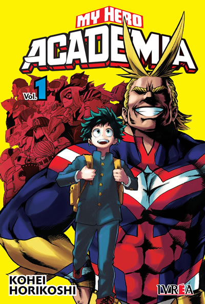

My Hero Academia Volumen 1
$600
Autor: Kohei Horikoshi
Boku no Hero Academia es una serie creada por Kohei Horikoshi, basado en un one-shot anterior del mismo autor; la historia se ubica en una realidad en la que más del 80% de la población mundial ha desarrollado un “don”, es decir, superpoderes que les otorgan grandes habilidades. Eso es lo común, lo natural, lo que todos esperan obtener en algún momento. Como consecuencia, también son moneda corriente los superhéroes y supervillanos, y sus respectivos seguidores y detractores.
Hay muchas personas que poseen un "DON ESPECIAL". Pero no todos lo usan para hacer el bien. Por eso, cada vez que las fuerzas del mal aparecen, ¡ahi estaran nuestros HEROES para defendernos! ¿Eh?¿Te preguntas quien soy?¡JA-JA-Ja-ja-ja!¡Ya va a empezar, joven!¡Hace tu propio camino hacia tus sueños!¡¡PLUS ULTRA!!